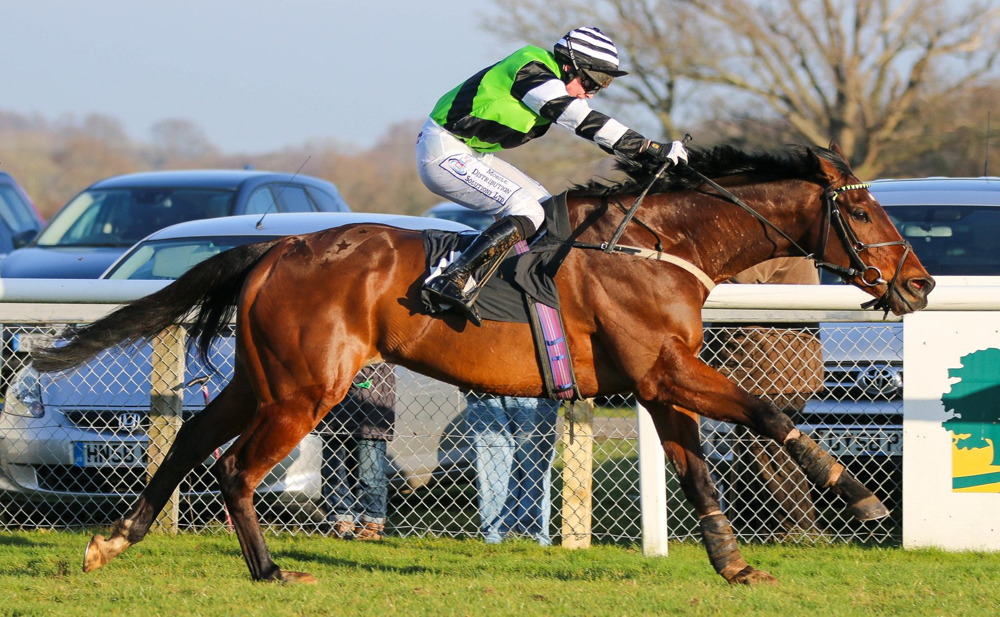

Darkness Falls resiste a Desert Castle en el Dewhurst y despierta el sueño de la Triple Corona
Darkness Falls se impuso a Desert Castle en el Darley Dewhurst Stakes (Grupo I, siete furlongs) de Newmarket. Es su segundo Grupo I consecutivo y el primer paso hacia un reto que nadie completa desde 1970.

Venía de correr sobre nueve furlongs y bajó a siete sin acusar el cambio. Darkness Falls pasó la prueba de velocidad, mantuvo el equilibrio para acelerar en la bajada del Dip y tuvo fondo para comerse la subida final, donde contuvo a Desert Castle. Ganó con claridad, aunque la carrera no zanja nada: los dos pueden pasar el invierno soñando con la próxima temporada.
Para el equipo del ganador, el sueño es el más alto. El camino que se dibuja empieza en la milla de esta misma pista en mayo y sigue en la milla y media de Epsom un mes después. En otoño llegaría el St Leger de Doncaster, dos furlongs más largo. Ganar las tres es la Triple Corona.
La genealogía añade peso. Camelot, su padre, se quedó a las puertas de esa hazaña. Encke lo batió en el St Leger, en una tarde en la que Town Moor enmudeció justo cuando se preparaba para celebrar.
Desde entonces, el último potro en completarla sigue siendo Nijinsky, en 1970. Fue el decimoquinto de la lista y su estatua recibe a quien cruza la entrada de Ballydoyle. John Magnier, Derrick Smith, Michael Tabor y sus socios querrían levantar otra al otro lado de la finca, para un potro que siguiera aquellas huellas.
La lectura es sencilla: velocidad ya ha demostrado, y lo que le falta por probar es la distancia que exigen Epsom y Doncaster.
En Newmarket soplaba el viento. En el recinto de ganadores, su preparador atendió a los medios con la gorra negra de visera que saca cada otoño, bien encajada en la cabeza.
Por Martín Larrañeta